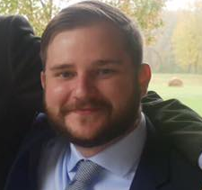

 My name is Ty Atkins and I am a Full Stack Developer, currently residing in Charlotte, NC. My passion is solving problems and learning new technologies.
In August of 2013, I enrolled at Appalachian State University with International Business as my major. I enjoyed studying foreign languages in school, settling on German, Chinese, and French. I found languages to be complex and, in some ways, a puzzle to be unwrapped. I graduated from Appalachian State University in 2017 with honors. While I found International Business to be academically stimulating, I knew right away that it wasn't for me as a career.
Technology has been a part of my life for as long as I could remember. Building computers at the age of 14, running gaming servers not much longer after that, and enjoying every new bit of technology that showed up. I knew this is where I wanted to be so shortly after graduating from Appalachian State, I put those years of foreign language study and my love of the tech world to use and enrolled in the University of North Carolina at Charlotte's full-time coding bootcamp where I trained as a full stack developer.
After spending 100 hours a week, studiously mastering the full stack gambit of technologies, I graduated from the boot camp in August of 2018 with A+'s across the board. During the boot camp, I mastered JavaScript, React.js, Node.js, MySQL, and MongoDB, along with a plethora of other skills which you can find in my resume.
This website is currently being redone in ReactJS. This is a temporary placeholder as the React landing page is developed.